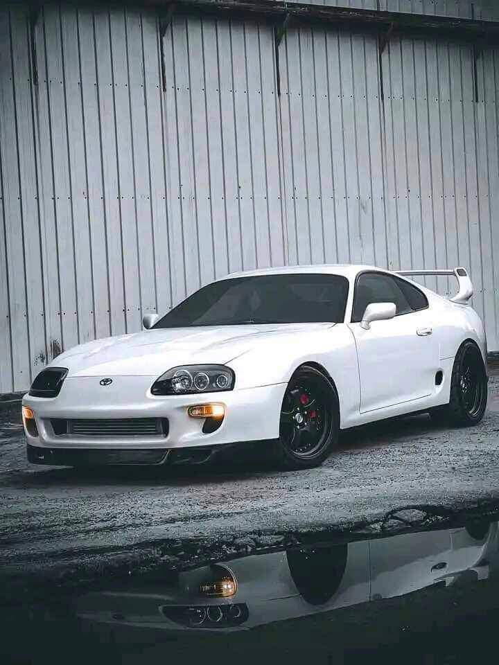
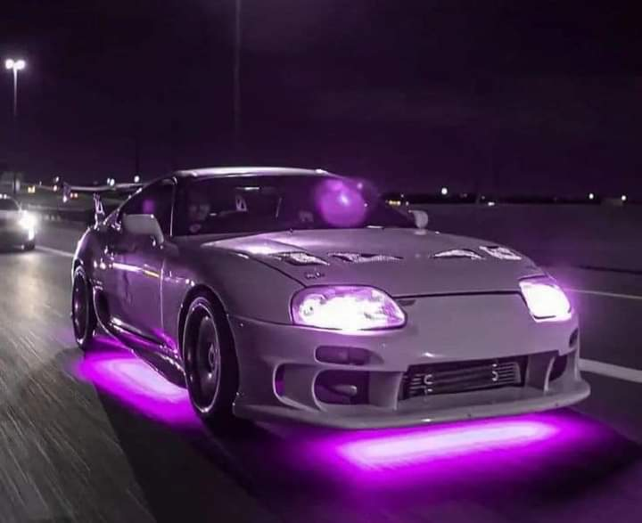

Hay pocos coches en la historia reciente del automóvil que tengan su legión de fans pero el Toyota Supra es uno de ellos. Y eso es algo destacable cuando se habla de un coche que comenzó siendo una versión más de otro coche: en este caso, del Toyota Celica. El Supra empezó abajo en el escalón de los deportivos y fue subiendo peldaños hasta ser un modelo propio y un modelo de culto, por una serie de razones, hasta llegar a la generación actual: el Toyota GR Supra. Para Toyota, el Supra es el equivalente del GT-R para Nissan. Es decir, el coche alcanzó un estatus muy especial en occidente por razones a veces muy alejadas de la competición, aunque eso no debería oscurecer los méritos y cualidades que tiene el coche.
El Toyota Supra de cuarta generación, el JZA80, compitió en el Campeonato de Turismos nipón, el JGTC, desde 1995 en la categoría reina GT500, y resultó ganador en 1997, 2001, 2002 y 2005. Y aunque inicialmente el coche corría con un motor 4 cilindros turbo de 2.1 litros, el 4T-GTE, a principio de la década de los 2000 se optó por el V-8 tipo 3UZ-FE de los Lexus SC430, debidamente preparado para la competición.
Fuera de Japón, el Toyota Supra JZA80 hizo un papel muy correcto en las 24 Horas de Le Mans de 1995, de la mano del equipo ADRS. Allí terminó décimo cuarto absoluto, algo que no está nada mal para lo que era básicamente el mismo coche que corría en el JGTC.
Y sin embargo, la mayoría de fans recuerda el Supra A80 por el motor 2JZ-GTE, un 6 cilindros en línea biturbo de 3.0 litros y 330 CV que en Japón no superaba los 280 CV, al menos sobre el papel. Su velocidad máxima era de 250 km/h, autolimitada, y el 0 a 100 km/h lo cubría en 5 segundos. Y es que aquel coche era algo pesado para la época: 1.630 kg. La realidad es que toda la fama del Supra le viene de su motor. O, mejor dicho, de las preparaciones que se efectuaron con ese bloque como base. Su 6 cilindros en línea biturbo 2JZ-GTE y cambio manual de seis marchas Getrag se prestaba sin quejarse a toda clase de preparaciones. Era la base ideal para que todos los tuners del planeta tuviesen la posibilidad de sacarle potencias descomunales.
Algunos ejemplos van desde HKS hasta Blitz pasando por Smokey Nagata y prácticamente por cualquiera que se atreviese a reforzar las piezas móviles del bloque antes de aumentar la presión de soplado de los turbos o simplemente instalar turbos del tamaño de una calabaza. Los tuners nipones eran capaces de extraer de ese motor hasta 700 CV sin tocar el bloque motor. Y con preparaciones muchas extensas se podían sacar entre 800 y 1.000 CV, aunque muchas veces esto se consiguiera con gasolina de 100 octanos.
Las proezas de Top Secret en el Reino Unido en su conquista de récords de velocidad en carretera, así como el legendario Toyota Supra con los colores de Castrol en Gran Turismo -el coche con el que era tan fácil ganarlo todo- hicieron el resto. El momento de reconocimiento absoluto le llegó con la primera entrega de 'Fast & Furious', un retrato bastante fiel de lo que era la escena tuning al sur de California entre finales de los 90 y principios de los 2000.